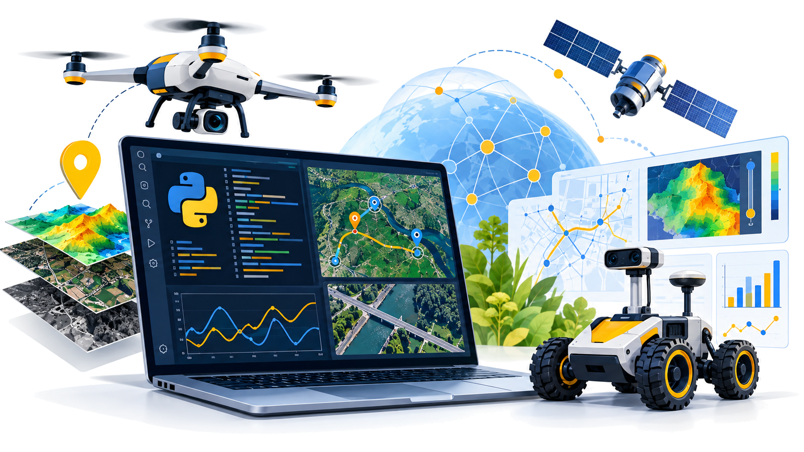

Від коду до корисного продукту
Практичний інтерактивний вебпідручник: 10 бібліотек Python, 10 мініпродуктів, готові клітинки для Google Colab і власний підсумковий проєкт. Приклади зосереджені на захисті цивільних, рятуванні, гуманітарній логістиці й технічній діагностиці. Жодних реальних військових координат, наведення чи бойового керування.

Відкрийте розділ → скопіюйте код → вставте в Google Colab → запустіть і змініть параметри. Усі дані навчальні або публічні.
OpenCV
Огляд пошкоджень інфраструктури за фотографіями
import cv2
import numpy as np
from matplotlib import pyplot as plt
img=np.zeros((240,360,3),dtype=np.uint8)
cv2.rectangle(img,(40,60),(310,190),(255,255,255),-1)
cv2.line(img,(70,80),(270,170),(0,0,0),5)
gray=cv2.cvtColor(img,cv2.COLOR_BGR2GRAY)
edges=cv2.Canny(gray,70,140)
plt.imshow(edges,cmap="gray");plt.axis("off");plt.show()Що перевірити самостійно?
Змініть пороги Canny та товщину лінії. Чи всі контури однаково помітні?
Ultralytics YOLO
Підрахунок транспортних засобів на навчальному фото для планування евакуації
%pip -q install ultralytics
from ultralytics import YOLO
from PIL import Image
from IPython.display import display
model=YOLO("yolo11n.pt")
# Публічне демонстраційне фото, не оперативні дані
url="https://ultralytics.com/images/bus.jpg"
results=model.predict(source=url,conf=0.35,verbose=False)
display(Image.fromarray(results[0].plot()[...,::-1]))
print("Виявлено об’єктів:",len(results[0].boxes))Що перевірити самостійно?
Змініть поріг conf. Порівняйте кількість виявлень; перевірте помилкові спрацювання.
PyTorch
Навчальна модель оцінки потреби в запасах гуманітарної допомоги
import torch
torch.manual_seed(4)
x=torch.tensor([[1.],[2.],[3.],[4.],[5.]])
y=2*x+1
model=torch.nn.Linear(1,1)
opt=torch.optim.SGD(model.parameters(),lr=0.01)
for epoch in range(500):
opt.zero_grad()
loss=((model(x)-y)**2).mean()
loss.backward();opt.step()
print("Прогноз для 6 умовних пунктів:",model(torch.tensor([[6.]])).item())Що перевірити самостійно?
Змініть залежність y, кількість епох та навчальну швидкість. Поясніть різницю між прогнозом і фактом.
NumPy
Оцінювання автономності рятувального робота за синтетичними показниками батареї
import numpy as np
t=np.arange(0,61,5)
charge=np.maximum(0,100-1.2*t)
for minute,pct in zip(t,charge):
print(f"{minute:2d} хв: {pct:5.1f}%")
print("Мінімальний заряд:",charge.min())Що перевірити самостійно?
Змініть темп витрати енергії та крок часу. Які припущення моделі нереалістичні?
Matplotlib
Графік навантаження на тимчасовий пункт допомоги
import numpy as np
import matplotlib.pyplot as plt
h=np.arange(8,19)
visitors=np.array([3,5,8,12,15,13,10,8,7,4,2])
plt.plot(h,visitors,marker="o")
plt.xlabel("Година");plt.ylabel("Кількість звернень")
plt.title("Навчальна модель пункту допомоги")
plt.grid(True);plt.show()Що перевірити самостійно?
Побудуйте стовпчикову діаграму; визначте години пікового навантаження.
SimPy
Симулятор автономної роботизованої станції: черга роботів на заряджання та технічну діагностику. Результат — час очікування й завантаженість станції.
%pip -q install simpy
import simpy
import matplotlib.pyplot as plt
WAIT = []
def robot(env, station, number, charge_time=6):
arrived = env.now
with station.request() as request:
yield request
wait = env.now - arrived
WAIT.append(wait)
print(f"Робот {number}: чекав {wait:.1f} хв")
yield env.timeout(charge_time)
print(f"Робот {number}: діагностика і заряджання завершені")
def arrivals(env, station, count=10, interval=3):
for number in range(1, count + 1):
env.process(robot(env, station, number))
yield env.timeout(interval)
env = simpy.Environment()
station = simpy.Resource(env, capacity=1)
env.process(arrivals(env, station))
env.run()
print(f"Середній час очікування: {sum(WAIT)/len(WAIT):.1f} хв")
plt.bar(range(1, len(WAIT)+1), WAIT)
plt.xlabel("Номер робота")
plt.ylabel("Очікування, хв")
plt.title("Черга роботів на станції")
plt.show()Що перевірити самостійно?
Змініть кількість зарядних портів (capacity) з 1 на 2 або 3, інтервал прибуття (interval) і час обслуговування (charge_time). Порівняйте середній час очікування та графіки. Подумайте, як організувати технічне обслуговування, щоб роботи не простоювали.
NetworkX
Побудуйте схему зв’язку між модулями роботизованої станції. Знайдіть критичний вузол: якщо він вийде з ладу, частина модулів втратить зв’язок.
import networkx as nx
import matplotlib.pyplot as plt
G = nx.Graph()
G.add_edges_from([
("Сервер", "Шлюз"), ("Шлюз", "Зарядка"),
("Шлюз", "Діагностика"), ("Діагностика", "Сенсор"),
("Сервер", "Монітор")
])
critical = list(nx.articulation_points(G))
print("Критичні вузли:", ", ".join(critical))
pos = nx.spring_layout(G, seed=4)
colors = ["#ffb86b" if n in critical else "#a7d8ff" for n in G]
nx.draw(G, pos, with_labels=True, node_color=colors,
node_size=2200, font_size=9)
plt.title("Мережа станції: помаранчеві — критичні вузли")
plt.show()Що перевірити самостійно?
Додайте резервний зв’язок між зарядкою та сервером. Чи змінився перелік критичних вузлів? Чим відрізняється зв’язність від швидкості передачі даних?
OSMnx
Побудуйте цифрову модель пішохідної мережі відкритого міського парку. Визначте кількість перехресть і дослідіть, як карта перетворюється на граф.
%pip -q install osmnx
import osmnx as ox
import matplotlib.pyplot as plt
# Публічна навчальна територія, без оперативних маршрутів
G = ox.graph_from_place("Hyde Park, London, UK", network_type="walk")
streets = ox.stats.count_streets_per_node(G)
intersections = sum(count >= 3 for count in streets.values())
print("Вузлів мережі:", len(G.nodes))
print("Ділянок:", len(G.edges))
print("Вузлів із 3+ підходами:", intersections)
fig, ax = ox.plot_graph(G, node_size=0, edge_color="#2877a8",
bgcolor="white", show=False, close=False)
ax.set_title("Пішохідна мережа парку")
plt.show()Що перевірити самостійно?
Знайдіть на схемі густі й розріджені ділянки мережі. Чому вузол графа не завжди є реальним перехрестям? Порівняйте граф із паперовою картою.
Rasterio
Створіть синтетичну теплову карту корпусу зарядної станції, збережіть її як GeoTIFF і виділіть ділянки з підвищеною температурою.
%pip -q install rasterio
import numpy as np
import rasterio
from rasterio.transform import from_origin
import matplotlib.pyplot as plt
y, x = np.mgrid[0:100, 0:100]
temp = (28 + 16*np.exp(-((x-65)**2+(y-45)**2)/250)
+ 2*np.sin(x/12)).astype("float32")
with rasterio.open("thermal_demo.tif", "w", driver="GTiff",
height=100, width=100, count=1, dtype="float32",
crs="EPSG:3857", transform=from_origin(0, 100, 1, 1)) as dst:
dst.write(temp, 1)
with rasterio.open("thermal_demo.tif") as src:
data = src.read(1)
threshold = 38
print("Комірок вище порогу:", int((data > threshold).sum()))
plt.imshow(data, cmap="inferno")
plt.contour(data > threshold, levels=[0.5], colors="cyan")
plt.colorbar(label="Умовна температура, °C")
plt.title("Синтетична теплова карта станції")
plt.show()Що перевірити самостійно?
Змініть поріг 38 °C на 35 °C і 40 °C. Як зміниться площа виділеної зони? Чому синтетичні дані не можуть замінити вимірювання датчиком?
SciPy
Проаналізуйте синтетичні вимірювання вібрації електродвигуна. Згладьте шум і знайдіть піки, які можуть потребувати додаткової перевірки.
import numpy as np
import matplotlib.pyplot as plt
from scipy.signal import savgol_filter, find_peaks
rng = np.random.default_rng(2)
t = np.linspace(0, 20, 400)
signal = 0.25*np.sin(3*t) + rng.normal(0, 0.13, len(t))
signal += 1.5*np.exp(-((t-8)/0.3)**2)
signal += 1.2*np.exp(-((t-15)/0.4)**2)
filtered = savgol_filter(signal, 21, 3)
peaks, _ = find_peaks(filtered, height=0.6, distance=35)
print("Виявлено піків:", len(peaks))
plt.plot(t, signal, alpha=.35, label="Вимірювання")
plt.plot(t, filtered, label="Згладжений сигнал")
plt.scatter(t[peaks], filtered[peaks], color="red", label="Піки")
plt.xlabel("Час, с")
plt.legend()
plt.show()Що перевірити самостійно?
Змініть поріг height=0.6 та розмір вікна згладжування. Коли алгоритм пропускає пік або знаходить зайвий? Чому пік ще не доводить несправність?
Розумна роботизована станція
Створіть цифровий пульт навчальної станції: змоделюйте чергу роботів на заряджання, покажіть навантаження та оцініть, чи вистачає зарядних портів. Для розширення додайте мережу модулів (NetworkX), теплову карту (Rasterio) і контроль вібрацій (SciPy). Усі дані синтетичні.
import numpy as np
import matplotlib.pyplot as plt
# Навчальна модель: роботи прибувають щогодини
hours = np.arange(9, 18)
robots = np.array([2, 4, 7, 8, 6, 5, 9, 4, 2])
ports = 2
service_per_port = 3 # умовних заряджань за годину
capacity = ports * service_per_port
queue, waiting = [], 0
for count in robots:
waiting = max(0, waiting + count - capacity)
queue.append(waiting)
fig, ax = plt.subplots(1, 2, figsize=(11, 4))
ax[0].bar(hours, robots, label="Роботи на заряджання")
ax[0].axhline(capacity, color="red", linestyle="--", label="Потужність")
ax[0].set_title("Навантаження зарядної станції")
ax[0].legend()
ax[1].plot(hours, queue, marker="o")
ax[1].set_title("Черга роботів")
ax[1].set_xlabel("Година")
plt.tight_layout()
plt.show()
print("Максимальна черга:", max(queue))Ідеї для самостійного вдосконалення
Змініть кількість зарядних портів із 2 до 3; порівняйте графіки. Додайте ще одну годину пікового навантаження. Визначте, які дані потрібні для реалістичнішої моделі: ємність батареї, час заряджання, пріоритет обслуговування. Поясніть, чому ця спрощена модель не враховує індивідуальний час заряджання.
Важливо: не завантажуйте в публічний Colab чутливі фото, реальні координати, персональні дані чи непублічну інформацію про військові об’єкти.